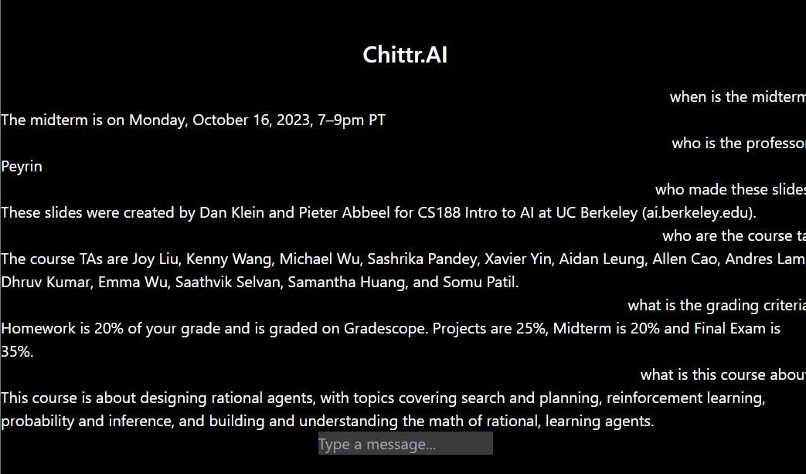

Was what a close friend of mine asked me after telling me about his disinterest on attending lectures. Chittr.AI was a passion project I developed to answer that question after
finishing up my experiences working on Unilite.AI's AI helper.
Using Bekeley's CS188 lecture 1 as a base, I aimed to create a convenient way for users to easily ask questions regarding the course material, akin to what a student would ask a lecturer. Below is a quick demo on what the process looks like. (Excuse the low video quality)
Built on React.JS and Express/JS, Chittr.AI uses a multitude of APIs and libraries in order to properly deliver the information it was fed accurately to the user requesting it. The first thing I needed to tackle was where I would store the index once everything had been vectorized and embedded. Luckily, Pinecone.io did exactly that. Using their free trial, I created an index in order to store and query the soon to be vectorized data from the lecture.
Getting the text document ready for Pinecone took a decent amount of steps. Essentially, I needed to first parse whatever file format I am working with into a text file.
I did this through the use of Langchain's document loaders allowing for
a simpler way to load documents into text. An example of what I did can be found in this code
in which the loader commented out was used to load a Youtube lecture's transcript.
After succesfully loading the data, we would then need to start vectorizing the data. This is where we need to use Langchain's OpenAI embeddings
to properly convert it into a format that can be easily retrieved when later queried using GPT. Doing so was a bit tricky especially with the limited requests you
had when embedding with a free OpenAI account at the time. The code for this can be found here.
With the dataproperly embedded and parsed into the Pinecone index, we can finally start querying from it. After creating a function that initializes a variable when
the user sends a question, I would need to create another function that queries the data from te saved index. Implementing this function wasn't too difficult but a tricky part came up
when playing around with the K-Nearest Neighbours implementation Pinecone uses when querying responses. I eventually found that the most efficient K for this project was to set it to 10.
The code can be found here.
To finish things off, I needed to deploy both the front and backend to Heroku to make sure that everything worked properly.
Unfortunately however, due to Heroku now being a paid service, I decided to move everything to Vercel. Vercel required me to host
both the backend API I had created and the frontend in order for everything to work. The issue with Vercel however, was that connecting between
2 deployments did not work properly, and thus the frontend only worked if I connected it to my locally deployed API. I am currently still waiting on an update
or solution to this since I don't plan to pay for hosting for the time being.
And there you have it. This was a summarized simplification of the whole process. The full code can be checked out on my
Github repository, please do check that out too if you are interested!
